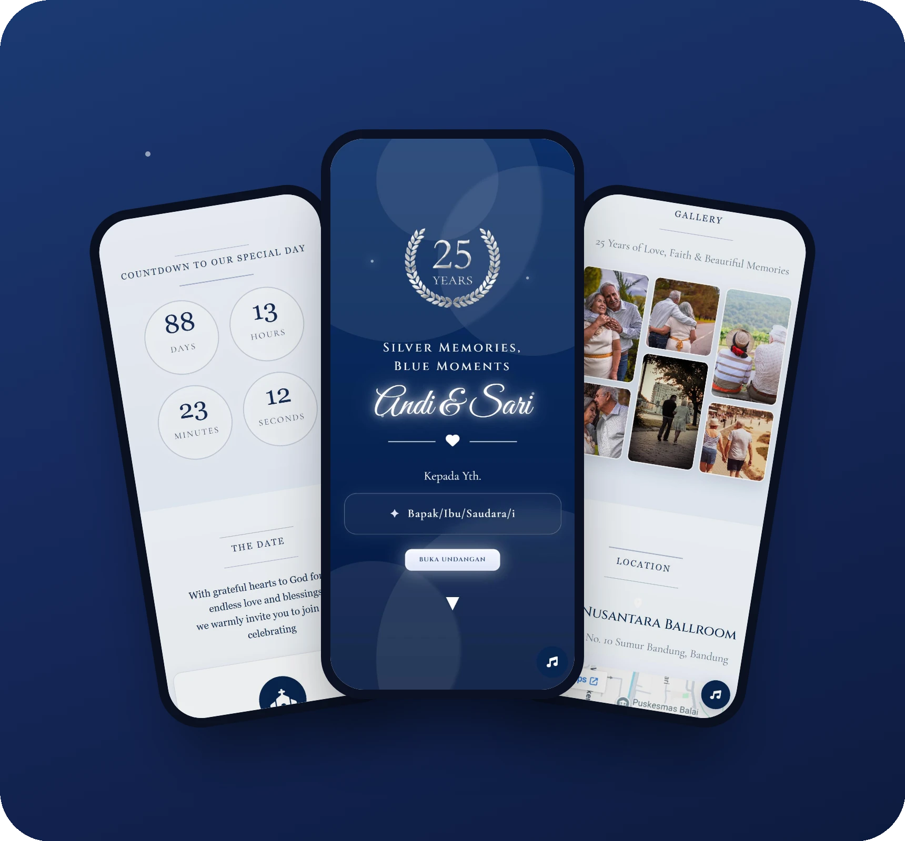
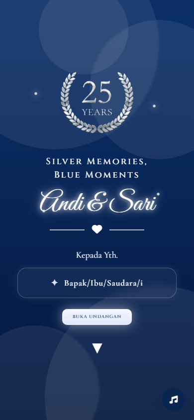
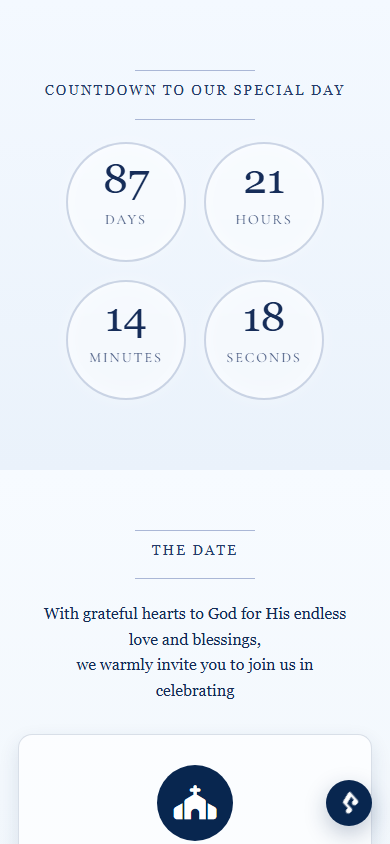
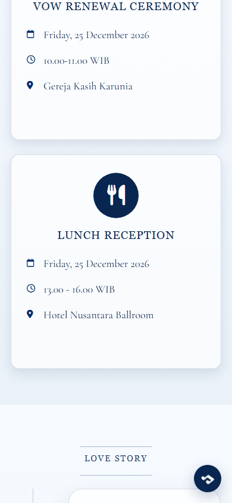
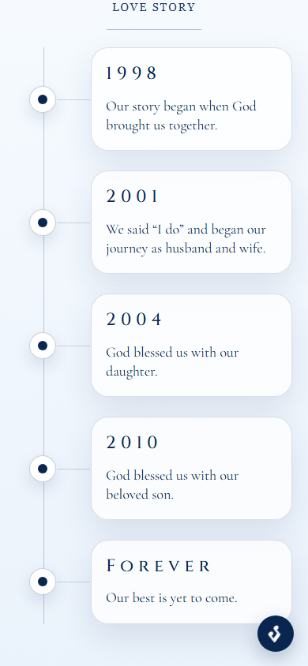
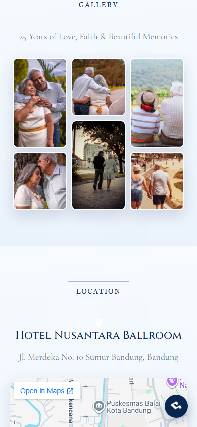

Digital Invitation Website
A mobile-first digital invitation for a 25th wedding anniversary vow renewal, with a personalized guest name, live countdown, love story timeline, gallery, and map.
- Year
- 2026
- Role
- Frontend Developer
- Type
- Personal project
- Stack
- HTML, CSS, JavaScript, Bootstrap 5

An invitation guests can open,
not just read
I designed and built a one-page digital invitation for a silver anniversary celebration. Guests open a personal link, tap to open the invitation, and scroll through the event details, the couple's story, a photo gallery, and directions to the venue, all with background music.
Designed for mobile first
Most guests open invitations from a chat app, so every section was laid out for a mobile screen.





What guests can do
Personalized guest name
Each guest gets their own link. The name is read from the URL (?to=Name), with "Bapak/Ibu/Saudara/i" as the fallback.
Opening experience
The page stays locked on the cover until the guest taps "Buka Undangan". Then the music starts and the page scrolls smoothly to the content.
Live countdown
Days, hours, minutes, and seconds update every second, and switch to a message once the day arrives.
Event details
Separate cards for the ceremony and the reception, each with date, time, and place.
Love story & gallery
A vertical timeline of milestones from 1998 to today, followed by a photo gallery.
Location & music
An embedded Google Map with an "Open Google Maps" button, plus a floating button to play or pause the music.
invitation/
● index.html
● sections/home.html
● sections/countdown.html
● sections/date.html
● sections/lovestory.html
● sections/gallery.html
● js/script.js
● css/style.css
● audio/goodness-of-god.mp3
fetch('sections/home.html') → #home-section
One page, split into reusable sections
Each section lives in its own HTML file and is loaded
into index.html with fetch(),
so the same template can be reused for another couple
by editing content files only, not the layout.
Styling uses Bootstrap 5 with custom CSS, and opening the invitation triggers a custom eased scroll animation instead of a plain jump.